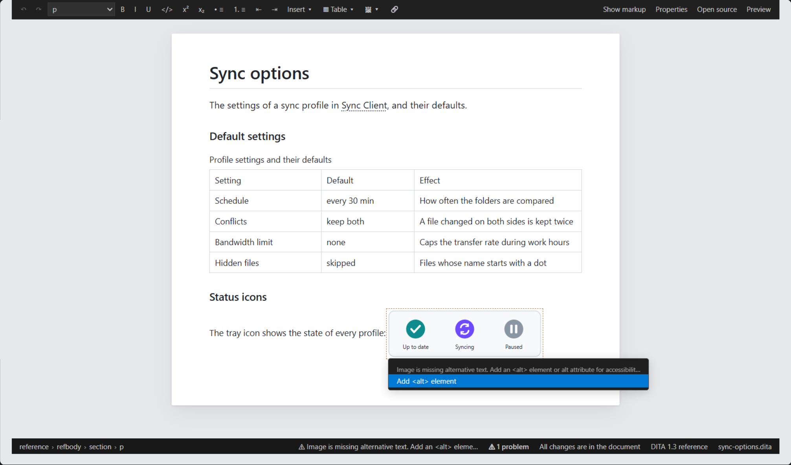

Problems and Quick Fixes in the Visual Editor
The language server's errors and warnings are marked on the page where they are, and their quick fixes are one keystroke away.
Problems on the Page
The problems listed in the Problems panel — DTD validation, DITA rules, references, your custom rules — are marked on the page as you edit:
- a problem in the text of a paragraph underlines that text (wavy: red for errors, orange for warnings, blue for information);
- a problem on an element — an attribute such as a duplicate
@id, or an element shown as a box such as an image or reused content — marks the element.
Hover a mark for its messages. With the cursor in a mark, the status line shows the message; the problem count next to it goes to the next problem. Marks move with the text while you type, and are refreshed a moment after you stop.
Quick Fixes
With the cursor in a mark, press Ctrl+., choose Quick Fix… at the top of the right-click menu, or click the message in the status line. The menu lists the fixes VS Code offers for that problem — the same as the light bulb in the text editor; the recommended fix is marked with a star.

The language server's fixes include adding a missing <alt>,
<title> or @id, making a duplicate
@id unique, removing an empty element, adding
@otherrole and turning @alt into
<alt>. With AI set up, Fix with DITA Craft
AI is offered too (see AI Features).
- Fixes made on the page
- A fix that only changes this topic is made on the page like your own edits: Ctrl+Z on the page takes it back, and only what it changes is rewritten.
- Fixes applied to the document
- A fix the page cannot make — one before the root element such as Add DOCTYPE, a command such as Fix with DITA Craft AI, or one that changes other files — is applied to the document directly. The page then follows the document as after a change in the text editor; the text editor's undo still has the fix.